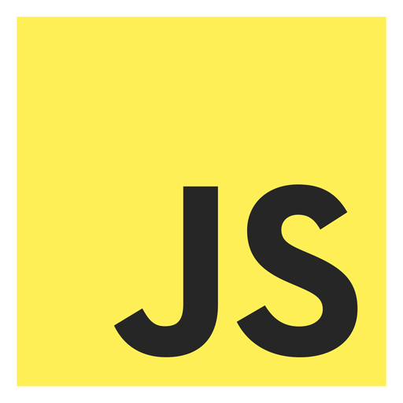
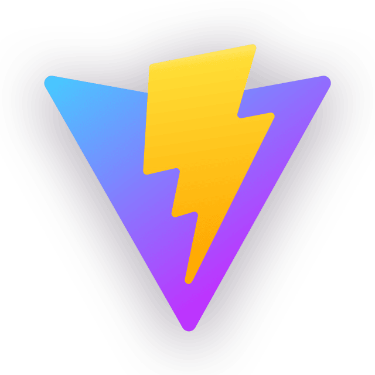
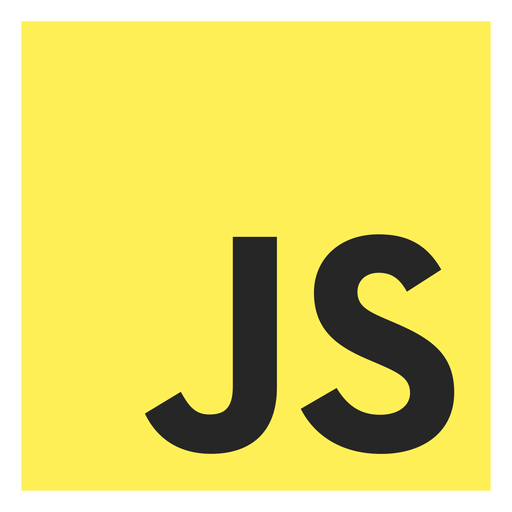
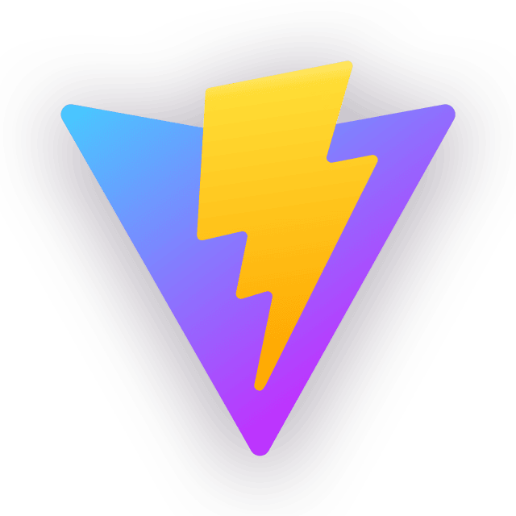

Gustav Campbell Werdelin
Ex-gallerist with a bachelor's degree in art history.
Enthusiastic about functionalist design and minimalism in art.
Beginner-programmer.
Programming experience:

 





Work and education:
Minor Gallery
1/2, 2024 - 1/7, 2025
Co-founder of gallery and exhibition-space Minor Gallery in Copenhagen.
Bachelor's degree in art history
1/9, 2022 - 12/6, 2025
Bachelor's degree in art history from University of Copenhagen.
Designer's assistant at Hermés
Amsterdam 2020 & Barcelona 2022
Assistant working for the designer at Hermés.
Museum assistant in Kanazawa, Japan
1/6 - 1/7, 2017
Museum assistant at 21st Century Museum of Contemporary Art in Kanazawa: Everyday Life - Signs of Awareness, 2017.